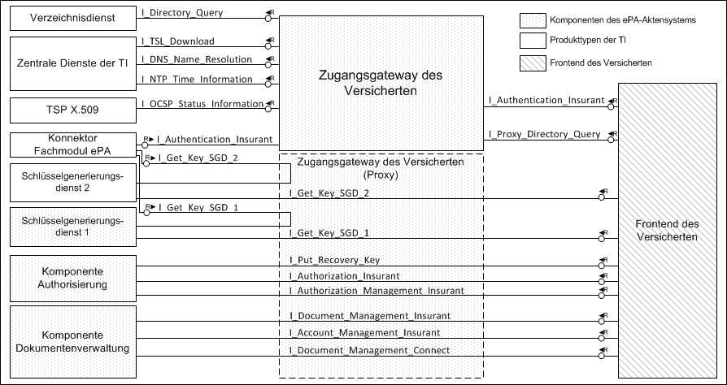
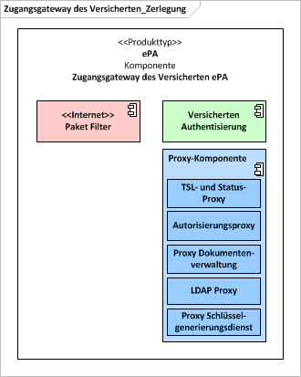

Elektronische Gesundheitskarte und Telematikinfrastruktur
Spezifikation Zugangsgateway des Versicherten ePA
| Version | 1.51.0 |
| Revision | 584298 |
| Stand | 25.07.2022 |
| Status | in Bearbeitung |
| Klassifizierung | öffentlich |
| Referenzierung | gemSpec_Zugangsgateway_Vers |
Änderungen zur Vorversion
Anpassungen des vorliegenden Dokumentes im Vergleich zur Vorversion können Sie der nachfolgenden Tabelle entnehmen.
Dokumentenhistorie
| Version | Stand | Kap./ Seite | Grund der Änderung, besondere Hinweise | Bearbeitung |
|---|---|---|---|---|
| initiale Erstellung | gematik | |||
| 1.0.0 | 18.12.18 | freigegeben | gematik | |
| 1.1.0 | 15.05.19 | freigegeben | gematik | |
| 1.2.0 | 28.06.19 | Einarbeitung P19.1, Begriffsanpassungen | gematik | |
| 1.3.0 | 02.10.19 | Einarbeitung P20.1/2 | gematik | |
| 1.4.0 | 02.03.20 | 6.2.2.2, 6.2.2.3 | Aktualisierung (I_Proxy_Directory_Query Nutzung) entsprechend neuem VZD-Datenmodell | gematik |
| 1.4.1 CC | 26.05.20 | Einarbeitung P21.3 | gematik | |
| 1.5.0 | 30.06.20 | Anpassungen gemäß Änderungsliste P22.1 und Scope-Themen aus Systemdesign R4.0.0 | gematik | |
| 1.6.0 | 12.11.20 | Anpassungen gemäß Änderungsliste P22.2 und Scope-Themen aus Systemdesign R4.0.1 | gematik | |
| 1.6.1 | 19.02.21 | Anpassungen gemäß Änderungsliste P22.5 | gematik | |
| 1.6.2 | 02.06.21 | 4.2 | Einarbeitung Änderungsliste ePA_Maintenance_21.1 | gematik |
| 1.6.3 | 09.07.21 | 5 | Einarbeitung Änderungsliste ePA_Maintenance_21.2 | gematik |
| 1.6.4 | 02.09.21 | 4.8 | Einarbeitung Konn_Maintenance_21.5 | gematik |
| 1.6.5 | 31.03.22 | Einarbeitung ePA_Maintenance_22.1 | gematik | |
| 1.50.0 | 06.04.22 | ePA-Stufe 2.5: gemF_ePA_DiGA_Anbindung, gemF_ePA_FDZ_Anbindung | gematik | |
| 1.51.0 | 25.07.22 | Änderungsliste ePA_Maintenance_22.2, redaktionell: diskriminierungsfreie Sprache (Black-/Whitelist) | gematik |
Die vorliegende Spezifikation definiert die Anforderungen zu Herstellung, Test und Betrieb des Zugangsgateways für Versicherte als Bestandteil des ePA-Aktensystems.
Dieses Dokument beschreibt die Komponente zur sicheren Anbindung von ClientSystemen in der Personal Zone mit den Versichertengeräten und deren beabsichtigtem Zugriff auf das ePA-Aktensystem. Das Zugangsgateway für Versicherte ist einerseits verantwortlich für die Authentifizierung des Versicherten und dessen Vertreter und andererseits für die Kommunikation mit dem Autorisierungsdienst und der Dokumentenverwaltung des ePA-Aktensystems sowie dem Schlüsselgenerierungsdienst ePA und dem Verzeichnisdienst. Aus den Kommunikationsbeziehungen der Client-Systeme mit dem ePA-Aktensystem resultieren vom Zugangsgateway für Versicherte anzubietende Schnittstellen. Dies wird in diesem Dokument sowie den fachanwendungsspezifischen Spezifikationen normativ geregelt.
Dieses Dokument richtet sich an Anbieter eines ePA-Aktensystems und Hersteller von Produkttypen, die hierzu eine Schnittstelle besitzen.
Dieses Dokument enthält normative Festlegungen zur Telematikinfrastruktur des deutschen Gesundheitswesens. Der Gültigkeitszeitraum der vorliegenden Version und deren Anwendung in Zulassungsverfahren wird durch die gematik GmbH in gesonderten Dokumenten (z. B. Dokumentenlandkarte, Produkttypsteckbrief) festgelegt und bekannt gegeben.
Schutzrechts-/Patentrechtshinweis
Die nachfolgende Spezifikation ist von der gematik allein unter technischen Gesichtspunkten erstellt worden. Im Einzelfall kann nicht ausgeschlossen werden, dass die Implementierung der Spezifikation in technische Schutzrechte Dritter eingreift. Es ist allein Sache des Anbieters oder Herstellers, durch geeignete Maßnahmen dafür Sorge zu tragen, dass von ihm aufgrund der Spezifikation angebotene Produkte und/oder Leistungen nicht gegen Schutzrechte Dritter verstoßen und sich ggf. die erforderlichen Erlaubnisse/Lizenzen von den betroffenen Schutzrechtsinhabern einzuholen. Die gematik GmbH übernimmt insofern keinerlei Gewährleistungen.
Spezifiziert werden in dem Dokument die von dem Produkttyp bereitgestellten (angebotenen) Schnittstellen. Benutzte Schnittstellen werden hingegen in der Spezifikation desjenigen Produkttypen beschrieben, der diese Schnittstelle bereitstellt. Auf die entsprechenden Dokumente wird referenziert (siehe auch Kapitel 7.5).
Die vollständige Anforderungslage für den Produkttyp ergibt sich aus weiteren Konzept- und Spezifikationsdokumenten. Diese sind in dem Produkttypsteckbrief des Produkttyps ePA-Aktensystem verzeichnet.
Anforderungen als Ausdruck normativer Festlegungen werden durch eine eindeutige ID sowie die dem RFC 2119 [RFC2119] entsprechenden, in Großbuchstaben geschriebenen deutschen Schlüsselworte MUSS, DARF NICHT, SOLL, SOLL NICHT, KANN gekennzeichnet.
Da in dem Beispielsatz „Eine leere Liste DARF NICHT ein Element besitzen.“ die Phrase „DARF NICHT“ semantisch irreführend wäre (wenn nicht ein, dann vielleicht zwei?), wird in diesem Dokument stattdessen „Eine leere Liste DARF KEIN Element besitzen.“ verwendet. Die Schlüsselworte werden außerdem um Pronomen in Großbuchstaben ergänzt, wenn dies den Sprachfluss verbessert oder die Semantik verdeutlicht.
Anforderungen werden im Dokument wie folgt dargestellt:
<AFO-ID> - <Titel der Afo>
Text / Beschreibung
[<=]
Dabei umfasst die Anforderung sämtliche zwischen Afo-ID und Textmarke [<=] angeführten Inhalte.
Das Zugangsgateway für Versicherte ermöglicht den Versicherten bzw. deren berechtigten Vertretern den Zugang zum zugehörigen Aktensystem über das Internet. Auf der einen Seite dient es der Abschottung des ePA-Aktensystems in Richtung Internet, auf der anderen Seite regelt es den kontrollierten Zugriff der Versicherten auf das Aktensystem mit seinen funktionalen Komponenten.
In der Abbildung 1 wird auf logischer Ebene die Einbindung des Zugangsgateways für Versicherte in das ePA-Aktensystem dargestellt. Zu sehen sind als integraler Bestandteil des Zugangsgateways für Versicherte eine für die Authentifizierung von Versicherten benötigte Komponente, ein LDAP-Proxy für Abfragen im zentralen Verzeichnisdienst der Telematikinfrastruktur (TI), ein Paketfilter zur Absicherung in Richtung Internet und mehrere Proxies, welche den Zugriff auf den Autorisierungsdienst, die Schlüsselgenerierungsdienste (SGD 1 und SGD 2) und die Dokumentenverwaltung ermöglichen.
Abbildung 1: Zugangsgateway für Versicherte im ePA-Aktensystem
Diese Spezifikation beschreibt die Anforderungen und gibt Umsetzungshinweise zum Zugangsgateway des Versicherten ePA und den in der Komponente enthaltenen Proxies. Die Komponente Authentisierung des Versicherten ePA ist in [gemSpec_Authentisierung_Vers] beschrieben.
Der folgende Abschnitt setzt die Komponente Zugangsgateway des Versicherten in den Systemkontext der Fachanwendung ePA.
Die Komponente Zugangsgateway des Versicherten wird als Provider von technischen Schnittstellen von weiteren technischen Komponenten und Produkttypen der Fachanwendung ePA aufgerufen.
Die Nutzer der Komponente sind Versicherte und deren Vertreter, welche über das ePA-Frontend des Versicherten Zugang und Zugriff auf das ePA-Aktensystem erhalten.
Autorisierte Nutzer sind weiterhin berechtigt, zum Zweck der Berechtigungserteilung Abfragen an den Verzeichnisdienst über den im Zugangsgateway des Versicherten enthaltenen LDAP-Proxy durchzuführen.
Mit der Komponente Zugangsgateway des Versicherten, als Bestandteil des ePA-Aktensystems, interagiert der Anbieter des ePA-Aktensystems in seiner Rolle als Administrator zur Systempflege und Konfiguration.
Der folgende Abschnitt beschreibt die Positionierung der Komponente Zugangsgateway des Versicherten im Kontext der Fachanwendung ePA und stellt die Schnittstellen der Komponente schematisch dar.

Abbildung 2: Nachbarsysteme des Zugangsgateways für Versicherte im ePA-Aktensystem
Die in Abbildung 2 dargestellten Nachbarsysteme des Zugangsgateway des Versicherten ePA sind:
Wie in Abbildung 2 dargestellt, bietet die Komponente Schnittstellen für Aufrufe vom ePA-Modul Frontend des Versicherten (ePA-Modul FdV) und vom Fachmodul ePA an. Weiterhin werden Aufrufe des ePA-Modul Frontend des Versicherten (ePA-Modul FdV) durch Nutzung von Proxies an Komponenten des Aktensystems ePA als auch weitere Produkte der TI geleitet. Die Komponente selbst nutzt Schnittstellen verschiedener Produkte der TI.
Die Nutzung von Schnittstellen der beschriebenen Nachbarsysteme der Komponente als auch die Bereitstellung von Schnittstellen erfolgt in den Betriebsumgebungen der TI (RU/TU, PU).
A_14249
Die Komponente Zugangsgateway des Versicherten MUSS die Bereitstellung von Schnittstellen für die Nutzung durch benachbarte Komponenten und Produkttypen aus verschiedenen Umgebungen der TI (RU/TU, PU) sicherstellen und voneinander separieren. <=
Die folgende Abbildung stellt die einzelnen Komponenten des Zugangsgateways des Versicherten dar.

Abbildung 3: Komponenten des Zugangsgateway des Versicherten
Die grün dargestellte Komponente dient der Authentisierung von Versicherten. Die blau dargestellten Komponenten dienen der Kontrolle der Kommunikation mit dem Autorisierungsdienst, der Dokumentenverwaltung, den Schlüsselgenerierungsdiensten (jeweils SGD 1 und SGD 2), den TSP X.509 und dem Verzeichnisdienst. Die rosa dargestellte Komponente hat Schnittstellen in Richtung Internet.
Der Paketfilter stellt die Anbindung des ePA-Aktensystems an das Internet her und gewährleistet die Abschottung des ePA-Aktensystems in Richtung Internet.
A_14017
Das ePA-Aktensystem MUSS zum Transportnetz Internet durch einen Paketfilter (ACL) gesichert werden, welcher ausschließlich die erforderlichen Protokolle weiterleitet. Der Paketfilter der Komponente Zugangsgateway des Versicherten MUSS frei konfigurierbar sein auf der Grundlage von Informationen aus OSI-Layer 3 und 4, das heißt Quell- und Zieladresse, IP-Protokoll sowie Quell- und Zielport. <=
A_14018
Der Paketfilter der Komponente Zugangsgateway des Versicherten, zum Schutz in Richtung Transportnetz Internet, DARF NICHT auf den anderen, zum Zugangsdienst für Versicherte gehörenden, physischen Komponenten implementiert werden. <=
A_14019-01
Der Paketfilter der Komponente Zugangsgateway des Versicherten MUSS die Weiterleitung von IP-Paketen an der Schnittstelle zum Internet auf die nachfolgenden Protokolle beschränken:
Hinweis zu A_14019-01:
Der Aktensystem-Anbieter muss für seine HTTPS-Schnittstelle ein TLS-Zertifikat von einem durch das CAB-Forum zulässigen TSP erwerben (dessen CA-Zertifikate also über einen aktuellen Webbrowser prüfbar ist, vgl. A_14776). Für dieses TLS-Zertifikat fragt das Zugangsgateway des Versicherten (die HTTPS-Schnittstelle ist Teil davon) regelmäßig für das OCSP-Stapling nach A_15888 den OCSP-Responder des TSP nach dem Sperrstatus des TLS-Zertifikats. Als Antwort erhält das Zugangsgateway des Versicherten eine OCSP-Response. Diese wird nach A_19126 geprüft und anschließend von der HTTPS-Schnittstelle verwendet (vgl. https://tools.ietf.org/html/rfc6066#section-8 und bspw. http://nginx.org/en/docs/http/ngx_http_ssl_module.html#ssl_stapling ).
Um dies zu ermöglichen, muss der Paketfilter entsprechende stateful-Firewall-Regeln gemäß A_14019-01 und A_19126 definieren.
A_19126
Der Paketfilter der Komponente Zugangsgateway des Versicherten MUSS bezüglich des OCSP-Stapling gemäß A_15888 folgende Vorgaben umsetzen:
A_14776
Die Komponente Zugangsgateway des Versicherten MUSS sich beim TLS-Verbindungsaufbau gegenüber dem Client mit einem Extended Validation TLS-Zertifikat eines Herausgebers gemäß [CAB Forum] authentisieren. Das Zertifikat MUSS an die Schnittstelle der Proxy-Komponente gebunden werden. <=
Die Anforderungen zur Verfügbarkeit ergeben sich aus [gemSpec_Perf#4.2]. Die Verfügbarkeit wird hergestellt durch Anzahl, Verteilung und Konfiguration der Zugangsgateways für Versicherte.
Die Auswahl der Zugangsgateways für Versicherte wird durch das ePA-Modul Frontend des Versicherten (ePA-Modul FdV) aus einer durch DNS übermittelten Liste vorgenommen. Auf die Auswahl des Zugangsdienstes für Versicherte kann der Anbieter des ePA-Aktensystems durch die Konfiguration und Anpassung der DNS-Einträge Einfluss nehmen. Die Verfügbarkeit ist hergestellt, wenn jeder Versicherte mit existierendem Konto beim Anbieter des ePA-Aktensystems oder dessen berechtigter Vertreter die Möglichkeit zum Verbindungsaufbau hat.
Eine hardwaretechnische Hochverfügbarkeit der einzelnen Zugangsgateways für Versicherte ist über grundlegende Maßnahmen, wie redundante Netzteile hinaus nicht erforderlich. Es steht dem Anbieter jedoch frei, zur Sicherstellung der Verfügbarkeitsanforderungen technische Lösungen, wie z.B. Load-Balancer und Stateful Failover innerhalb von Clustern einzusetzen, so dass jedes einzelne Zugangsgateway für Versicherte im Ergebnis eine höhere Verfügbarkeit oder Leistungsfähigkeit besitzt.
A_14026
Die Komponente Zugangsgateway des Versicherten MUSS sicherstellen, dass bei Ausfall eines von mehreren Paketfiltern die verbleibenden Paketfilter in demselben Standort den Datenverkehr aller Mandanten des ausgefallenen Paketfilters zusätzlich übernehmen können. <=
A_14030
Die Komponente Zugangsgateway des Versicherten MUSS den Paketfilter Internet so konfigurieren, dass bei Vollauslastung der Systemressourcen im ePA-Aktensystem keine weiteren Verbindungen angenommen werden. <=
Durch die Zurückweisung von Verbindungen wird sichergestellt, dass das ePA-Modul Frontend des Versicherten (ePA-Modul FdV) einen Verbindungsaufbau mit einem anderen Zugangsgateway für Versicherte des jeweiligen ePA-Aktensystems versucht, bei dem die erforderlichen Ressourcen zur Verfügung stehen.
A_14031
Der Anbieter des ePA-Aktensystems MUSS jedem Zugangsgateway für Versicherte genau eine öffentliche IPv4-Adresse zuweisen. Diese Adresse MUSS auf der physischen Schnittstelle zum Internet konfiguriert werden. Die öffentlichen IP-Adressen des Zugangsgateways für Versicherte MÜSSEN vom Anbieter des ePA-Aktensystems zur Verfügung gestellt werden. <=
A_14032
Der Anbieter des ePA-Aktensystems SOLL jedem Zugangsgateway für Versicherte eine IPv6-Adresse zuweisen. Diese Adresse MUSS auf der physischen Schnittstelle zum Internet konfiguriert werden. Die öffentliche IPv6-Adresse MUSS vom Anbieter des Zugangsgateways des Versicherten zur Verfügung gestellt werden. <=
Die Adressen des ePA-Aktensystems am Übergang zur TI werden vom Anbieter des Zentralen Netzes aus dem Adressblock TI_Zentral zugewiesen.
Die "Authentisierung des Versicherten ePA" dient der Bestätigung der Authentifizierung von Versicherten und deren berechtigten Vertretern. Die Teilkomponente ist in [gemSpec_Authentisierung_Vers] beschrieben.
Die Authentisierung Versicherter generiert bei erfolgreicher Authentifizierung eines Versicherten ein Token, wie in [gemSysL_Fachanwendung_ePA] und [gemSpec_Authentisierung_Vers] beschrieben.
Von dem Zugangsgateway des Versicherten wird bei Verbindungsaufbau durch ein ePA-Modul Frontend des Versicherten (ePA-Modul FdV) eine serverseitige Session erstellt. Die Session dient sowohl der Umsetzung von Anforderungen zum Beenden nach Inaktivität als auch der Kontrolle, dass ausschließlich authentifizierte ePA-Modul Frontend des Versicherten (ePA-Modul FdV) Zugriff auf die Komponente kryptographische Autorisierung und ausschließlich autorisierte ePA-Modul Frontend des Versicherten (ePA-Modul FdV) Zugriff auf die Dokumentenverwaltung, VAU und den LDAP-Proxy erhalten.
Bei erfolgreicher Authentisierung wird die für das ePA-Modul Frontend des Versicherten (ePA-Modul FdV) verwaltete Session vom Zugangsgateway des Versicherten mit dem Status "Authentisiert" markiert.
A_15197
Die Komponente Zugangsgateway des Versicherten MUSS bei einem Aufruf der Versicherten Authentisierung durch ein ePA-Modul Frontend des Versicherten (ePA-Modul FdV) eine serverseitige Session anlegen. <=
A_15198-02
Das ePA-Modul Frontend des Versicherten MUSS für jede Aktensession - außer für die Kommunikation mit dem Schlüsselgenerierungsdienst - genau eine TLS-Session nutzen. <=
Die für das ePA-Modul Frontend des Versicherten (ePA-Modul FdV) verwaltete Session dient im Weiteren der Aufgabe die Zugangskontrolle bei Zugriff auf die Komponenten Autorisierung, LDAP-Proxy und Dokumentenverwaltung zu ermöglichen.
Die serverseitig authentifizierte TLS gesicherte Verbindung vom ePA-Modul Frontend des Versicherten (ePA-Modul FdV) terminiert am Zugangsgateway des Versicherten. Hier kommen Anwendungsproxies zum Einsatz, welche der Zugangskontrolle auf weitere Komponenten der Fachanwendung ePA dienen.
Somit wird sichergestellt, dass ausschließlich authentisierte ePA-Modul Frontend der Versicherten (ePA-Modul FdV) auf die Komponenten Autorisierung und ausschließlich autorisierte ePA-Modul Frontend des Versicherten (ePA-Modul FdV) auf die Komponenten LDAP-Proxy, Dokumentenverwaltung und die VAU zugreifen können.
Bei negativen Ergebnissen, bei Fehlerfällen der Kommunikation mit Komponenten des ePA-Aktensystems oder nach Inaktivität des ePA-Modul Frontend des Versicherten (ePA-Modul FdV) wird die TLS-Session zum ePA-Modul Frontend des Versicherten (ePA-Modul FdV) abgebaut und die serverseitige Session entfernt.
A_14356
Die Komponente Zugangsgateway des Versicherten MUSS die erfolgreiche Authentifizierung und Autorisierung anhand erfolgreicher Übergabe der Authentisierungs- und Autorisierungs-Token an das ePA-Modul Frontend des Versicherten (ePA-Modul FdV) prüfen. Es MUSS hierbei die erfolgreiche Ausgabe der Token ausgewertet werden. Das jeweilige Token selbst MUSS nicht geprüft werden.
<=
A_14359
Die Komponente Zugangsgateway des Versicherten MUSS sicherstellen, dass der Autorisierungsdienst erst nach erfolgreicher Authentisierung und die Dokumentenverwaltung sowie der LDAP-Proxy erst nach erfolgreicher Autorisierung für die aufgebaute Session des Versicherten erreichbar sind. <=
Der Autorisierungsproxy dient der Überprüfung, ob Aufrufe der Schnittstellen, welche in [gemSpec_Autorisierung] beschrieben sind, ausschließlich von authentisierten ePA-Modul Frontend des Versicherten (ePA-Modul FdV) getätigt werden.
Die von den Proxies auszuwertenden Aufrufparameter (FQDN und Pfadinformationen) sind in [gemSpec_Aktensystem] Kapitel 5.1 beschrieben. Beispielsweise wird die Komponente Autorisierung Versicherter durch einen Aufruf mit FQDN des Aktensystems im Internet (ePA_FQDN) und dem in [gemSpec_Aktensystem] Kapitel 5.1, Tabelle 2 angegebenen Pfad für "authz" aufgerufen. Verbindungsinformationen von Produkten der TI und weiterer Komponenten des ePA Aktensystems können per DNS Service Discovery abgerufen werden (siehe u.a. [gemSpec_Aktensystem] Kapitel 5.1, Tabelle 1).
Nach erfolgreicher Authentisierung ist die für das ePA-Modul Frontend des Versicherten (ePA-Modul FdV) verwaltete Session mit dem Status "Authentisiert" markiert. Nur unter dieser Voraussetzung darf der Autorisierungsproxy Aufrufe an den Autorisierungsdienst weiterleiten. Ist die Voraussetzung nicht erfüllt, muss die Verbindung zum ePA-Modul Frontend des Versicherten (ePA-Modul FdV) abgebaut werden.
Bei erfolgreicher Autorisierung wird die für das ePA-Modul Frontend des Versicherten (ePA-Modul FdV) verwaltete Session mit dem Status "Autorisiert" markiert. Dabei ist zu beachten, dass die Änderung des Status der Session nur bei erfolgreichem Aufruf der Operation "getAuthorizationKey" der Schnittstelle "I_Authorization_Insurant" am Autorisierungdienst erfolgen darf. Ein Aufruf anderer Operationen und Schnittstellen führt nicht zur Änderung des Status der Session.
Referenziert wird an dieser Stelle die bereits im Kapitel 4.2 "Authentisierung Versicherter" existierende Anforderung "A_14356 - Prüfung Token Übergabe".
A_14300
Der Autorisierungsproxy der Komponente Zugangsgateway des Versicherten MUSS sicherstellen, dass ausschließlich authentisierte ePA-Modul Frontend des Versicherten (ePA-Modul FdV) Zugriff auf den Autorisierungsdienst erhalten.
<=
Der Proxy Dokumentenverwaltung stellt sicher, dass die in [gemSpec_Dokumentenverwaltung] beschriebenen Schnittstellen ausschließlich von autorisierten ePA-Modul Frontend des Versicherten (ePA-Modul FdV) aufgerufen werden können.
Bei bestehender Session zum ePA-Modul Frontend des Versicherten (ePA-Modul FdV), wird von der Komponente bei jedem Aufruf von Operationen der in [gemSpec_Dokumentenverwaltung] beschriebenen Schnittstellen geprüft, ob die für das ePA-Modul Frontend des Versicherten (ePA-Modul FdV) verwaltete Session mit dem Status "Autorisiert" markiert ist. Ist dies nicht der Fall, muss der Aufruf unterbunden werden.
A_14301
Der Proxy Dokumentenverwaltung der Komponente Zugangsgateway des Versicherten MUSS sicherstellen, dass ausschließlich autorisierte ePA-Modul Frontend des Versicherten (ePA-Modul FdV) Zugriff auf die Dokumentenverwaltung erhalten.
<=
Aufrufe des ePA-Modul Frontend des Versicherten (ePA-Modul FdV) werden an die Dokumentenverwaltung weitergeleitet. Diese Aufrufe richten sich an einen Kontext der Versicherten (VAU). Um der Dokumentenverwaltung zu ermöglichen, den korrekten Kontext des Versicherten (VAU) zu identifizieren, wird den Aufrufen vom Zugangsgateways der Versicherten eine über alle Zugangsgateways der Versicherten eines Anbieters eindeutige SessionID hinzugefügt.
A_14040
Die Komponente Zugangsgateway des Versicherten MUSS bei der Weiterleitung eines Requests vom ePA-Modul Frontend des Versicherten (ePA-Modul FdV) an die ePA-Dokumentenverwaltung das „request-header field:session“ auf einen Wert setzen, der die vom Zugangsgateway geführte TLS-Session für die Dokumentenverwaltung eindeutig zuordenbar macht.
<=
Das Zugangsgateway für Versicherte ermöglicht ausschließlich einem autorisierten ePA-Modul Frontend des Versicherten (ePA-Modul FdV) durch Nutzung des LDAP-Proxies, Daten aus dem Verzeichnisdienst der TI-Plattform (VZD) abzufragen. Die Kommunikation vom LDAP-Proxy zum VZD erfolgt über das LDAPv3-Protokoll. Der LDAP-Proxy darf ausschließlich lesend auf den VZD zugreifen.
Die Abfragen vom ePA-Modul Frontend des Versicherten (ePA-Modul FdV) zum VZD, über den LDAP-Proxy, werden gemäß Directory Services Markup Language (DSML) [DSML2.0] Syntax verschickt. Der LDAP-Proxy stellt die dafür vorgesehene Schnittstelle in Richtung ePA-Modul Frontend des Versicherten (ePA-Modul FdV) zur Verfügung und führt die für den eigentlichen Zugriff auf den VZD notwendige Protokollwandlung in das LDAPv3-Protokoll durch.
Die Anzahl der pro Anfrage zurückgegebenen Einträge des Verzeichnisdienstes wird durch den Verzeichnisdienst [gemSpec_VZD#TIP1-A_5552] limitiert.
A_14470
Der LDAP-Proxy der Komponente Zugangsgateway des Versicherten MUSS den FQDN und den Port des VZD durch eine DNS-SD-Namensauflösung gemäß [RFC6763] mit dem Bezeichner ”_ldap._tcp.vzd.<DNS_TOP_LEVEL_DOMAIN_TI>.” ermitteln. <=
A_14514-01
Der LDAP-Proxy der Komponente Zugangsgateway des Versicherten MUSS eine LDAPS-Verbindung zum VZD aufbauen. Dabei wird das Serverzertifikat des Verzeichnisdienst C.ZD.TLS-S nach TUC_PKI_018 geprüft.
Parameter:
Das Zugangsgateway des Versicherten muss das ePA-Modul Frontend des Versicherten (ePA-Modul FdV) bei den Aufgaben unterstützen, regelmäßig die TSL-Aktualisierung vorzunehmen (A_15874) und Sperrinformationen für Zertifikate zu ermitteln (A_15873). Die OCSP-Responder und der TSL-Dienst haben deutlich höhere SLAs in Bezug auf die Verfügbarkeit innerhalb der TI. Manche OCSP-Responder besitzen keine direkte Anbindung an das Internet (Komponenten-PKI, Kontext: Prüfung Identität vertrauenswürdige Ausführungsumgebung). Es wird damit auch möglich, bessere Aussagen über die Verfügbarkeit von ePA-Anwendungsfällen zu treffen, weil weniger nicht-SLA-belegte Datenverbindungen für die Anwendungsfälle notwendig sind (Wenn eine funktionierende Datenverbindung zwischen ePA-Modul Frontend des Versicherten (ePA-Modul FdV) und Zugangsgateway des Versicherten besteht, dann kann eine in [gemSpec_Perf] definierte Verfügbarkeit garantiert werden). Aufgrund der Verwendung der Proxy-Funktionalität über die schon etablierte TLS-Verbindung sind OCSP-Requests des ePA-FdV nicht im Klartext im Internet sichtbar.
A_15868
Ein Zugangsgateway des Versicherten MUSS folgende Vorgaben umsetzen:
Hinweise:
A_15869
Ein Zugangsgateway des Versicherten MUSS folgende Vorgaben umsetzen:
Auf Anfrage stellt die gematik eine Beispielimplementierung für A_15869 Spiegelstrich 3 bereit.
A_15871
Ein Zugangsgateway des Versicherten KANN OCSP-Antworten aus A_15869 bis zu 4 Stunden cachen und bei einer entsprechend passenden OCSP-Anfrage anstatt neu den OCSP-Responder anzufragen, die im Cache befindliche OCSP-Antwort ausliefern. <=
A_15888
Ein Zugangsgateway des Versicherten MUSS an der HTTPS-Schnittstelle zum Internet OCSP-Stapling [RFC-6066] unterstützen. <=
Zur Nutzung der in [gemSpec_SGD_ePA] beschrieben Schlüsselableitungsfunktionalität für den Schutz von Akten- und Kontextschlüssel einer ePA werden Aufrufe zu den Schlüsselgenerierungsdiensten SGD 1 und SGD 2 über den "Proxy Schlüsselgenerierungsdienst" ermöglicht.
Der Proxy SGD stellt sicher, dass ein ePA-FdV Aufrufe an den SGD 1 und SGD 2 durchführen kann.
Die Information, auf welche Anfragen (Pfade) des ePA-Modul Frontend des Versicherten (ePA-Modul FdV) der Proxy SGD aktiv wird ("/SGD1" für den SGD 1 und "/SGD2" für den SGD 2), sind in [gemSpec_SGD_ePA#2.2 Tabelle 2] angegeben.
Die FQDN und IP-Adresse des SGD wird vom Proxy SGD durch DNS Service Discovery in der TI bezogen. Hierzu wird der in [gemSpec_Aktensystem] Tabelle: Tab_ePA_Service Discovery angegebene PTR Record im Namensraum der TI abgerufen.
A_17495
Der Proxy Schlüsselgenerierungsdienst der Komponente Zugangsgateway des Versicherten MUSS sicherstellen, dass ePA-Modul Frontend des Versicherten (ePA-Modul FdV) auch ohne Authentisierung und Autorisierung Zugriff auf den SGD 1 und den SGD 2 erhalten.
<=
Für die Fehlersuche - insbesondere bei IOP-Problemen zwischen Produkten verschiedener Hersteller in einer fortgeschrittenen Entwicklungsphase - hat es sich als notwendig erwiesen, dass ein Fehlersuchender den Klartext der Kommunikation zwischen ePA-Client und VAU-Instanz mitlesen kann. Vgl. [gemSpec_Aktensystem#5.8. Tracing in Nichtproduktivumgebungen].
Das ZGdV stellt Informationen über die aktuell verfügbaren Sensorpunkte im AS bereit. Weiterhin exponiert das ZGdV die Daten der Sensorpunkte über TCP (i. s. v. nicht TLS-gesichert) bspw. über Port 8001,...,8009. Die dort von den Sensorpunkten ge-streamten Daten sind nur Testdaten, also keine Echtdaten, d. h. es sie haben keinen Schutzbedarf bez. Vertraulichkeit. Um die exponierten Sensordaten-Punkte vor DoS-Angriffen zu schützen, erlaubt das ZGdV im Fall der Fälle die TCP-Ports auf IP-Layer über Firewall-Regeln abzusichern.
A_21890-01
Die Komponente Zugangsgateway des Versicherten (ZGdV) MUSS genau in Nichtproduktivumgebungen:
Hinweis zu A_21890-*: Die semistatische JSON-Datei, welche ein Client unter dem Pfad „/tracingpoints“ erhalten kann, ist eine einfache Form von Service-Discovery. Damit kann ein Client (Fehlersuchende(r)) erfahren welche Tracing-Quellen es aktuell im AS gibt i. S. v. welche Tracing-Quellen ein Client zur Fehlersuche aktuell verwenden kann.
A_22582
Die Komponente Zugangsgateway des Versicherten (ZGdV) KANN Sicherheitsmechanismen bereitstellen und aktivieren, die es genau in Nichtproduktivumgebungen ermöglichen temporär, automatisiert und nur nach erfolgreicher Authentifizierung die TCP-Ports für das Streaming der Sensorpunkte für Clients nach A_21890-* freizuschalten. <=
Hinweis zu A_22582-*: In den Nichtproduktivumgebungen darf es keine Echtdaten geben. Es dürfen sich dort nur Daten befinden deren Schutzbedarf bez. Vertraulichkeit niedrig ist. Der optionale Schutzmechanismus nach A_22582-* braucht nur einen einfachen DoS-Schutz leisten gegen einen Angreifer mit niedrigen Angriffspotential. Der Anbieter ist, sofern er einen solchen Mechanismus einsetzen möchte, frei dafür den Mechanismus selbst zu wählen. Er wählt dann bei "DoS-protection-type" (vgl. A_21890-*) einen selbstdefinierten (möglichst sprechenden) Namen.
Beispiele für Umsetzungsmöglichkeiten
Die Vertrauensstelle (VST) und das Forschungsdatenzentrum (FDZ) sind als weitere Anwendung des Gesundheitswesens und der Gesundheitsforschung (WANDA Smart) an die Telematikinfrastruktur angebunden. Der Transport-Proxy (T-Proxy) im Zugangsgateway des Aktensystems stellt sicher, dass ein ePA-FdV die Schnittstellen der Vertrauensstelle (VST) und des Forschungsdatenzentrums (FDZ) zum Zweck der Freigabe von Daten für die Forschung erreichen kann. Der Transport-Proxy leitet dabei nur Anfragen an VST oder FDZ weiter, wenn der Nutzer des anfragenden ePA-FdVs vorher erfolgreich für die Nutzung einer Akte autorisiert wurde.
Der Transport-Proxy ist ein HTTPS-Proxy und leitet eine Anfrage auf der am Zugangsgateway terminierte TLS-Verbindung ePA-FdV -> Aktensystem über eine TLS-Verbindung an die WANDA-Dienste weiter. VST und FDZ weisen sich dabei mit einer Identität der TI aus (C.FD.TLS-S mit oid_wadg als Rolle).
Eine Anfrage über den Transport-Proxy erfolgt durch das ePA-FdV im folgenden Format.
https://<Endpunkt des Transport-Proxys>/https://<Endpunkt des WANDA-Dienstes in der TI>
A_22617-01
Die Komponente Zugangsgateway des Versicherten MUSS einen Transport-Proxy bereitstellen, der HTTP-Requests an WANDA-Dienste im zentralen Netz über eine serverseitig authentifizierte TLS-Verbindung weiterleitet.
<=
A_21852
Der Transport-Proxy der Komponente Zugangsgateway des Versicherten MUSS sicherstellen, dass Anfragen eines ePA-FdVs nur weitergeleitet werden, wenn der Nutzer des ePA-FdVs vorher erfolgreich für den Zugang zu einer Akte autorisiert wurde. <=
Hinweis: Die Bindung der TLS-Session-ID an den Authentisierungsstatus hat sich in der Praxis als ungünstig erwiesen (insbesondere bei iOS-Geräten). Es ist bei der Umsetzung von A_21852-* ebenfalls zulässig die Client-IP-Adresse als Merkmal des Authentisierungsstatus zu verwenden, da das Sicherheitsziel, was mit A_21852-* zu erreichen ist, eher DoS-Schutz der Server der VST und des FDZ ist. Alternativ kann der Hersteller auch einen proprietären HTTP(S)-Token-Mechanismus zwischen AS <-> ePA-FdV <-> T-Proxy umsetzen.
A_21862-01
Der Transport-Proxy der Komponente Zugangsgateway des Versicherten MUSS beim Aufbau der TLS-Verbindung die WANDA-Dienste über das Zertifikat C.FD.TLS-S mit dem passenden FQDN authentifizieren. Dabei MUSS das Zertifikat nach TUC_PKI_018 geprüft werden.
Parameter:
A_21863
Der Transport-Proxy der Komponente Zugangsgateway des Versicherten MUSS Weiterleitungen auf die FQDN der WANDA-Dienste Vertrauensstelle (VST) und Forschungsdatenzentrum (FDZ) beschränken. <=
A_21865
Der Anbieter des ePA-Aktensystems MUSS mit Maßnahmen am Transport-Proxy der Komponente Zugangsgateway des Versicherten verhindern, dass am Transport-Proxy Profile über das Verhalten der Versicherten bzgl. der Freigabe von ePA-Daten für die Forschung gebildet werden (z.B. welcher Versicherte wann wie oft Daten freigibt oder widerruft). <=
A_21876
Der Transport-Proxy der Komponente Zugangsgateway des Versicherten MUSS sicherstellen, dass Anfragen und Daten nach der Weiterleitung an WANDA-Dienste oder das ePA-FdV unverzüglich gelöscht werden. <=
A_14034
Die Komponente Zugangsgateway des Versicherten MUSS sicherstellen, dass der Zugriff auf Dienste der TI ausschließlich über einen Sicheren Zentralen Zugangspunkt (SZZP) erfolgt. <=
A_14036
Die Komponente Zugangsgateway des Versicherten MUSS alle Komponenten seines Zugangsdienstes für Versicherte mit denStratum-1-NTP-Servern der TI synchronisieren. <=
A_15518
Die in der Komponente Zugangsgateway des Versicherten verwendeten Proxies MÜSSEN als transparente Proxies umgesetzt werden. <=
A_13879
Die Komponente Zugangsgateway des Versicherten MUSS sich gegenüber dem ePA-Modul Frontend des Versicherten (ePA-Modul FdV) beim Aufbau der TLS-Session durch sein ExtendedValidation-Zertifikat authentisieren. Die Beschaffung des Zertifikats erfolgt durch den Anbieter über eine öffentliche CA. <=
A_14033
Die Komponente Zugangsgateway des Versicherten MUSS sicherstellen, dass jede Kommunikation mit dem ePA-Modul Frontend des Versicherten (ePA-Modul FdV) TLS verschlüsselt erfolgt. <=
Die Verwendung der SoapAction ermöglicht einer Reverse-Proxy-Komponente innerhalb des Zugangsgateways, die Nachrichten zu verarbeiten, ohne die http-Payload zu untersuchen.
A_14416
Bei einer fehlenden oder fehlerhaft gesetzten SoapAction MUSS die bestehende Session in Richtung des aufrufenden Systems durch das Zugangsgateway geschlossen werden. <=
A_14357
Die Komponente Zugangsgateway des Versicherten MUSS bei negativem Ergebnis der Prüfung der Ausgabe eines Tokens durch eine der nachgelagerten Komponenten die für das ePA-Modul Frontend des Versicherten (ePA-Modul FdV) verwaltete Session und die Verbindung zum ePA-Modul Frontend des Versicherten (ePA-Modul FdV) nach Weiterleitung der eigentlichen Antwort des Token-Ausstellers an das ePA-Modul Frontend des Versicherten (ePA-Modul FdV) beenden. <=
A_14358
Die Komponente Zugangsgateway des Versicherten MUSS nach Inaktivität von 20 Minuten die Session zum ePA-Modul Frontend des Versicherten (ePA-Modul FdV) abbauen. <=
A_13876
Die Komponente Zugangsgateway des Versicherten MUSS einen direkten Zugriff aus dem Internet auf Dienste der zentralen TI-Plattform verhindern. <=
A_14016
Die Komponente Zugangsgateway des Versicherten MUSS für alle vom Internet erreichbaren Schnittstellen Maßnahmen zum Schutz vor DoS-Angriffen auf Anwendungsebene treffen. Weitere Angriffe auf Anwendungsebene MÜSSEN mindestens durch Einsatz geeigneter IDS/IPS Lösungen verhindert werden. <=
A_15196
Die Komponente Zugangsgateway des Versicherten MUSS bei Beauftragung eines qualifizierten Dienstleisters zum Schutz vor volumetrischen DoS-Angriffen, Kriterien des BSI zur Auswahl qualifizierter Dienstleister umsetzen. <=
Als Maßnahme gegen volumetrische Denial-of-Service-Angriffe wird die Verwendung von DNS- oder BGP-Routing-Diensten empfohlen. Hinweise des BSI: https://www.bsi.bund.de/DE/Themen/Unternehmen-und-Organisationen/Informationen-und-Empfehlungen/Empfehlungen-nach-Gefaehrdungen/DDoS/ddos_node.html.
A_15599-02
Die Komponente Zugangsgateway des Versicherten MUSS bei Fehlern in einer nachgelagerten Komponente die Verbindung zum ePA-Frontend des Versicherten (ePA-FdV) abbauen und die verwaltete Session löschen. Dies gilt für folgende Fehlerfälle:
| Komponente | Fehler |
|---|---|
| Authentisierung | Alle spezifizierten wst:*-Fehler, ASSERTION_INVALID |
| Autorisierung | ASSERTION_INVALID, DEVICE_UNKNOWN, DEVICE_LOCKED |
| Dokumentenverwaltung | ASSERTION_INVALID, INVALID_AUT_KEY |
A_14028
Die Komponente Zugangsgateway des Versicherten MUSS sicherstellen, dass
Die Schnittstellen der Versicherten Authentisierung sind in [gemSpec_Authentisierung_Vers] beschrieben.
Aufrufe des ePA-Modul Frontend des Versicherten (ePA-Modul FdV) an die Komponenten Autorisierung, SGD 1 und Dokumentenverwaltung des Produkttyps ePA-Aktensystem sowie SGD 2 werden von der Komponente Zugangsgateway des Versicherten nicht verarbeitet, sondern nach Prüfung der Existenz und des Zustands (Authentisiert oder Autorisiert) der verwalteten Session an die Komponente Autorisierung bzw. die Dokumentenverwaltung weitergeleitet. Die fachliche Verarbeitung der Aufrufe wird in [gemSpec_Autorisierung_ePA] und in [gemSpec_Dokumentenverwaltung] beschrieben.
Rückgabeparameter von Funktionsaufrufen der Schnittstellen I_Authorization_Insurant, I_Account_Management_Insurant, I_Authorization_Management_Insurant an das ePA-Modul Frontend des Versicherten (ePA-Modul FdV), werden hinsichtlich der Existenz vom SOAP-Fehlercode ausgewertet.
Die Schnittstelle I_Proxy_Directory_Query dient der Abfrage des Verzeichnisdienstes in der TI. Über diese Schnittstelle können Versicherte zum Zweck der Berechtigung von Leistungserbringern Einträge im Verzeichnisdienst suchen. Die Nutzung dieser Schnittstelle steht nur autorisierten Versicherten zur Verfügung. Die Autorisierung erfolgt über die korrespondierenden Funktionalitäten des Autorisierungsdienstes. Der DSML "authRequest" wird nicht genutzt.
Die Schnittstelle wird auf Basis des OASIS Standards Directory Services Markup Language (DSML) v2.0 [DSML2.0] definiert.
A_14361
Der LDAP-Proxy der Komponente Zugangsgateway des Versicherten MUSS den Webservice I_Proxy_Directory_Query mit der Operation "Search" gemäß
Tabelle 1: Tab_ePA_I_Proxy_Directory_Query
| Schnittstelle |
I_Proxy_Directory_Query |
|
|---|---|---|
| Version |
2.0 |
|
| Namensraum |
"urn:oasis:names:tc:DSML:2:0:core" |
|
| Namensraum-Kürzel |
DSML |
|
| Operationen |
Name |
Kurzbeschreibung |
| Search |
Suche nach Leistungserbringern bzw. Leistungsbringerorganisationen im Verzeichnisdienst. |
|
| WSDL |
[DSML.wsdl] |
|
| XML-Schema |
http://www.oasis-open.org/committees/dsml/docs/DSMLv2.xsd |
|
A_14419
Der LDAP-Proxy der Komponente Zugangsgateway des Versicherten MUSS die Operation "Search" im Web Service I_Proxy_Directory_Query gemäß Tabelle Tab_ePA_I_Proxy_Directory_Query anbieten und als Antwort darauf entsprechend WSDL und XML-Schema das "SearchResponse" und "ErrorResponse" unterstützen.
<=
A_14421
Der LDAP-Proxy der Komponente Zugangsgateway des Versicherten MUSS für die Umsetzung des Webservices I_Proxy_Directory_Query die Schnittstelle I_Directory_Query des Verzeichnisdienstes [gemSpec_VZD] nutzen. <=
A_14467
Die Komponente Zugangsgateway des Versicherten MUSS die Anzahl der Operationen an der Schnittstelle I_Proxy_Directory_Query pro Versicherten Session und Minute auf einen - durch den Betreiber im Wertebereich 1 bis 15 - konfigurierbaren Wert beschränken. Der Defaultwert für diese Konfigurationsparameter MUSS 10 betragen. Wird diese Anzahl überschritten, MUSS ein HTTP-Response mit HTTP-Statuscode 429 entsprechend RFC6585 Kapitel 4 "429 Too Many Requests" an den Client zurückgegeben werden.
<=
A_14468
Der LDAP-Proxy der Komponente Zugangsgateway des Versicherten DARF personenbezogene Daten NICHT in das Logging aufnehmen. <=
A_17748-02
Der LDAP-Proxy der Komponente Zugangsgateway des Versicherten MUSS sicherstellen, dass ein anfragendes ePA-Modul Frontend des Versicherten (ePA-Modul FdV) ausschließlich die Informationen des Verzeichnisdienstes erhält, welche für die Erfüllung der Aufgaben benötigt werden. Folgende Vorgaben MÜSSEN eingehalten werden:
Für die Nutzung des Webservices I_Proxy_Directory_Query durch einen Client sind folgende Randbedingungen zu beachten:
Das ePA-Modul Frontend des Versicherten (ePA-Modul FdV) kann über den Webservices I_Proxy_Directory_Query alle in der Datenstruktur „Verzeichnisdienst_Eintrag_flache_Liste“ (dn="dc=data,dc=vzd") des Verzeichnisdienstes [gemSpec_VZD#5] definierten Daten ermitteln.
Zur Suche im Verzeichnisdienst muss das ePA-Modul Frontend des Versicherten (ePA-Modul FdV) das "SearchRequest" entsprechend OASIS DSML v2.0 [DSML2.0] nutzen. Die DSML.wsdl schränkt die zugelassenen Operationen im Webservice I_Proxy_Directory_Query auf ein "SearchRequest" pro SOAP Request ein. Der LDAP-Proxy antwortet mit einem "SearchResponse" bzw. im Fehlerfall mit einem "ErrorResponse". Andere Operationen werden im Webservice I_Proxy_Directory_Query nicht unterstützt. Die Parameter der Nachrichten werden durch das OASIS DSML v2.0 Schema und Dokumentation [DSML2.0] definiert. Die Verarbeitung der "SearchRequest" erfolgt durch den Verzeichnisdienst entsprechend LDAPv3.
Beispiel für einen SearchRequest mit dem eine Orthopädiepraxis mit Namen Schmidt gesucht wird:
ID: 7
Address: http://localhost:9098/services/DSML/1.0.0
Encoding: UTF-8
Http-Method: POST
Content-Type: application/soap+xml; action="http://ws.gematik.de/phr/dsml/v2#dsmlRequest"; charset=UTF-8
Headers: {Accept=[*/*], cache-control=[no-cache], clienttype=[fdv], Content-Length=[613], content-type=[application/soap+xml; action="http://ws.gematik.de/phr/dsml/v2#dsmlRequest"; charset=UTF-8], forwarded=[proto=https;host="localhost:9094";for="127.0.0.1:63936"], host=[localhost:9098], pragma=[no-cache], tlssession=[6660eee2226aebe2ab967e6fadb45825e34481b4852c1c303df36a185a77e731], user-agent=[Apache-CXF/3.3.5], x-forwarded-for=[127.0.0.1], x-forwarded-host=[localhost:9094], x-forwarded-port=[9094], x-forwarded-proto=[https]}
Payload: <soap:Envelope xmlns:soap="http://www.w3.org/2003/05/soap-envelope">
<soap:Body>
<ns3:SearchRequest xmlns:ns2="urn:oasis:names:tc:DSML:2:0:core" xmlns:ns3="http://ws.gematik.de/phr/dsml/v2" dn="dc=data,dc=vzd" scope="wholeSubtree" derefAliases="neverDerefAliases">
<ns2:filter>
<ns2:and>
<ns2:equalityMatch name="subject">
<ns2:value>Orthopädie</ns2:value>
</ns2:equalityMatch>
</ns2:and>
</ns2:filter>
<ns2:attributes>
<ns2:attribute name="displayName"/>
<ns2:attribute name="street"/>
<ns2:attribute name="postalCode"/>
<ns2:attribute name="userCertificate"/>
</ns2:attributes>
</ns3:SearchRequest>
</soap:Body>
</soap:Envelope>
Beispiel für ein Response auf den SearchRequest:
ID: 7
Response-Code: 200
Encoding: UTF-8
Content-Type: application/soap+xml
Headers: {}
Payload: <soap:Envelope xmlns:soap="http://www.w3.org/2003/05/soap-envelope">
<soap:Body>
<ns3:DSMLsearchResponse xmlns:ns2="urn:oasis:names:tc:DSML:2:0:core" xmlns:ns3="http://ws.gematik.de/phr/dsml/v2">
<searchResponse requestID="6">
<ns2:searchResultEntry dn="uid=7,dc=data,dc=vzd">
<ns2:attr name="street">
<ns2:value>Gaffelsteig 134</ns2:value>
</ns2:attr>
<ns2:attr name="postalCode">
<ns2:value>45879</ns2:value>
</ns2:attr>
<ns2:attr name="displayName">
<ns2:value>Praxis Prof. Gourmet</ns2:value>
</ns2:attr>
<ns2:attr name="userCertificate;binary">
<ns2:value>MIIEpTCCA42gAwIBAgIHAQ97rEzGnjANBgkqhkiG9w0BAQsFADCBmjELMAkGA1UEBhMCREUxHzAdBgNVBAoMFmdlbWF0aWsgR21iSCBOT1QtVkFMSUQxSDBGBgNVBAsMP0luc3RpdHV0aW9uIGRlcyBHZXN1bmRoZWl0c3dlc2Vucy1DQSBkZXIgVGVsZW1hdGlraW5mcmFzdHJ1a3R1cjEgMB4GA1UEAwwXR0VNLlNNQ0ItQ0EyNCBURVNULU9OTFkwHhcNMTkwMTAyMjMwMDAwWhcNMjQwMTAyMjI1OTU5WjBUMQswCQYDVQQGEwJERTEcMBoGA1UECgwTMTAwMDIyMjA3IE5PVC1WQUxJRDEnMCUGA1UEAwweUHJheGlzIFByb2YuIEdvdXJtZXQgVEVTVC1PTkxZMIIBIjANBgkqhkiG9w0BAQEFAAOCAQ8AMIIBCgKCAQEAyQOTyl8dB2G/rfc1lUU3so0Uwwe55mAlPCmOMM7kdfYWVuTeXXFjSNFFreK43KPyT6cDN9x7Fl8auzErLg64kKLuS47vBD27/qmkaxitzLlRioGPfM79EC3efIutpSSdEeNGWjHRWTnCB2MW8kBi4+dN93qTiYfG5X+QEWcQbOd7LMSbfXgp4/KgD3H/+cS2qR8mL1q+RDwnkMgb3l05K0SzotlVHxZ18DpuXV63PTnYXGaz564CTF7nKSzA2ewCTLEBaMCtYXKY8x2v2om0iUNaBToOc93eUegHq7EFpFrmX+b8PHnhoIlxZTduBUz0KtKjYQMFxYh/CrCkDt2OEQIDAQABo4IBMzCCAS8wHQYDVR0OBBYEFCxL7gqLNViJxujRaQ8e84HFibC1MCwGA1UdHwQlMCMwIaAfoB2GG2h0dHA6Ly9laGNhLmdlbWF0aWsuZGUvY3JsLzAMBgNVHRMBAf8EAjAAMEUGBSskCAMDBDwwOjA4MDYwNDAyMBYMFEJldHJpZWJzc3TDpHR0ZSBBcnp0MAkGByqCFABMBDITDTEtMjBWWkQwMDAwMDcwHwYDVR0jBBgwFoAUeunhb+oUWRYF7gPp0/0hq97p2Z4wIAYDVR0gBBkwFzAKBggqghQATASBIzAJBgcqghQATARMMA4GA1UdDwEB/wQEAwIEMDA4BggrBgEFBQcBAQQsMCowKAYIKwYBBQUHMAGGHGh0dHA6Ly9laGNhLmdlbWF0aWsuZGUvb2NzcC8wDQYJKoZIhvcNAQELBQADggEBAD80QGann9YCqQ1adaKwv+CvSjY+svYlTIGKiRbBUI3zyVrlGlM3N8zZFF95NfabYLXpKHppEX9FgekxHOgYC/vs40MSh19ioLpgfxI1fJh5t8H1Fs3XX2HAwd5dMwHgOZwibSBZhtkUmlbGvpOQ+Q6OuZYVjAZRuWk4tAgnwRPilFVC+TQ9Xvy8o+PPHsjdorpuv2b9w1ttbKBbmP+oikl1YmTP6XLKxuDlbMade4/8xdpP9ypRFvVlcdl2rZ73VjHJ01A47Q+11g8oGn+G4vnkC7EEwqtg8BD/MUKs6qfkTVRZCSVj8vv6h0gMKrduytEUKKU72fNIqjfz/8sGHM4=</ns2:value>
</ns2:attr>
</ns2:searchResultEntry>
<ns2:searchResultEntry dn="uid=10,dc=data,dc=vzd">
<ns2:attr name="street">
<ns2:value>Caligariplatz 34</ns2:value>
</ns2:attr>
<ns2:attr name="postalCode">
<ns2:value>09111</ns2:value>
</ns2:attr>
<ns2:attr name="displayName">
<ns2:value>QXJ6dHplbnRydW0gT3J0aG9ww6RkaWU=</ns2:value>
</ns2:attr>
</ns2:searchResultEntry>
<ns2:searchResultDone requestID="6">
<ns2:resultCode code="0" descr="success"/>
</ns2:searchResultDone>
</searchResponse>
</ns3:DSMLsearchResponse>
</soap:Body>
</soap:Envelope>
| Kürzel |
Erläuterung |
|---|---|
| ACL |
Access Control List |
| BSI |
Bundesamt für Sicherheit in der Informationstechnik |
| DNS |
Domain Name System |
| DSML |
Directory Services Markup Language |
| eGK |
elektronische Gesundheitskarte |
| ePA |
elektronische Patientenakte |
| IDS/IPS |
Intrusion-Detection/Intrusion-Prevention System |
| LDAP |
Lightweight Directory Access Protocol |
| OCSP |
Online Certificate Status Protocol |
| OSI |
Open Systems Interconnection Model |
| SOAP |
Simple Object Access Protocol |
| SZZP |
Sicherer Zentraler Zugangspunkt |
| TI |
Telematikinfrastruktur |
| TLS |
Transport Layer Security |
| TSP |
Trusted Services Provider |
| VAU |
Vertrauenswürdige Ausführungsumgebung |
| VZD |
Verzeichnisdienst der TI-Plattform |
| WANDA | Weiteren Anwendungen für den Datenaustausch in der TI |
| Begriff |
Erläuterung |
|---|---|
| Funktionsmerkmal | Der Begriff beschreibt eine Funktion oder auch einzelne, eine logische Einheit bildende, Teilfunktionen der TI im Rahmen der funktionalen Zerlegung des Systems. |
Das Glossar wird als eigenständiges Dokument (vgl. [gemGlossar]) zur Verfügung gestellt.
Die nachfolgende Tabelle enthält die Bezeichnung der in dem vorliegenden Dokument referenzierten Dokumente der gematik zur Telematikinfrastruktur. Der mit der vorliegenden Version korrelierende Entwicklungsstand dieser Konzepte und Spezifikationen wird pro Release in einer Dokumentenlandkarte definiert, Version und Stand der referenzierten Dokumente sind daher in der nachfolgenden Tabelle nicht aufgeführt. Deren zu diesem Dokument jeweils gültige Versionsnummer ist in der aktuellen, von der gematik veröffentlichten Dokumentenlandkarte enthalten, in der die vorliegende Version aufgeführt wird.
| [Quelle] |
Herausgeber: Titel |
|---|---|
| [gemGlossar] |
gematik: Glossar |
| [gemSpec_Aktensystem] |
gematik: Spezifikation ePA-Aktensystem |
| [gemSpec_Authentisierung_Vers] |
gematik: Spezifikation Authentisierung des Versicherten ePA |
| [gemSpec_Autorisierung] |
gematik: Spezifikation Autorisierung ePA |
| [gemSpec_Dokumentenverwaltung] |
gematik: Spezifikation ePA-Dokumentenverwaltung |
| [gemSpec_ePA_FdV] | gematik: Spezifikation ePA-Frontend des Versicherten |
| [gemSpec_Krypt] | gematik: Übergreifende Spezifikation Verwendung kryptographischer Algorithmen in der Telematikinfrastruktur |
| [gemSpec_Perf] | gematik: Übergreifende Spezifikation Performance und Mengengerüst TI-Plattform |
| [gemSpec_TSL] | gematik: Spezifikation TSL-Dienst |
| [gemSpec_SGD_ePA] | gematik: Spezifikation Schlüsselgenerierungsdienst ePA |
| [gemSpec_VZD] |
gematik: Spezifikation Verzeichnisdienst |
| [Quelle] |
Herausgeber (Erscheinungsdatum): Titel |
|---|---|
| [DSML2.0] |
OASIS: Directory Services Markup Language v2.0 December 18, 2001 https://www.oasis-open.org/standards http://www.oasis-open.org/committees/dsml/docs/DSMLv2.doc http://oasis-open.org/committees/dsml/errata https://www.oasis-open.org/committees/dsml/docs/DSMLv2.xsd |
| CAB-Forum |
Liste vertrauenswürdiger Zertifikatsherausgeber (Root-CAs) für Anwendungen im Internet https://cabforum.org/members/ |